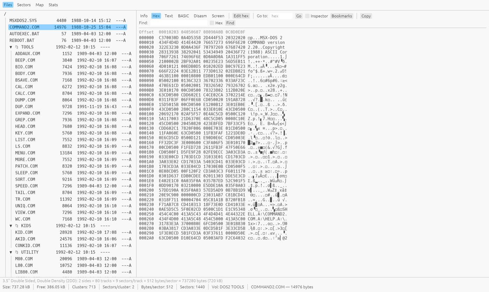
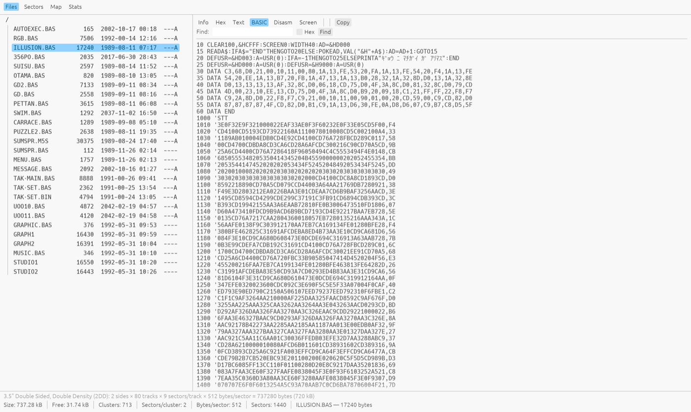
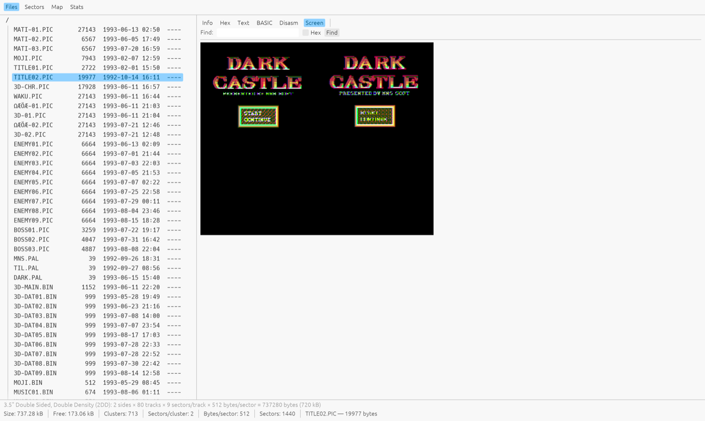
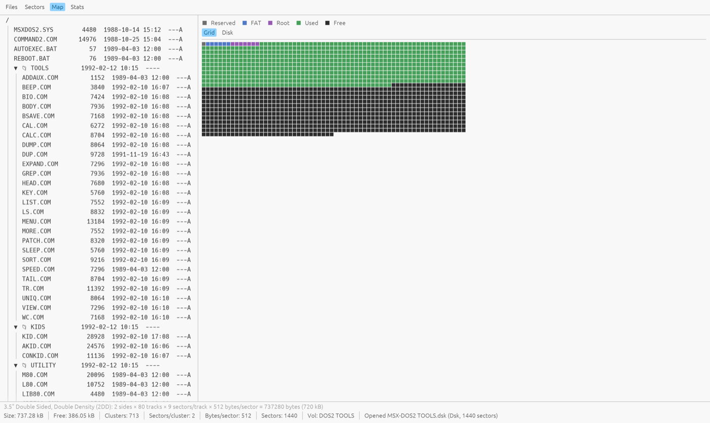

A free, cross-platform desktop tool for browsing, inspecting, editing and converting vintage MSX floppy, hard-disk and cassette images.
Prebuilt binaries for every platform, straight from the
latest GitHub release. Or build from source with a plain
cargo build.
Real disks, real data — MSX-DOS 2 system tools, a Japanese magazine disk, and a game title screen.




Everything the classic DskExplorer did — and a lot it never could.
Raw .dsk dumps, .img,
.msx, .ddi, compressed
.xsa, raw-track .dmk,
openMSX multi-partition hard disks, and
.cas/.tsx tapes.
File tree with MSX-DOS 2 subdirectories, FAT12/FAT16 hard-disk partitions as top-level nodes, tape file lists, and multi-select for batch extract or delete.
Add, rename and delete files; edit bytes in hex; edit sectors in place. Writes go back into the original container — and the boot sector is never clobbered.
Selectable bytes-per-row, byte selection and copy, go-to-offset, named bookmarks, find (text or hex), and a data inspector that decodes BSAVE headers, boot-sector BPBs and FCBs at the cursor.
Tokenized MSX-BASIC programs become readable listings, decoded through the right regional character set.
SCREEN 2–12, Graph Saurus, Dynamic Publisher,
Maki-chan, V9990 .G9B and more, with
automatic companion-palette loading and PNG export.
International, Japanese (kana), Russian, Korean, Arabic and Brazilian MSX code pages — auto-detected per disk, switchable live for filenames, text, BASIC and hex.
Sector viewer with disk-wide search, a graphical
usage map, whole-disk stats with FAT-chain integrity
checks, and per-track .dmk analysis for
copy-protected disks.
Content-derived Info pane: BSAVE/BLOAD headers, graphics-format details, music and tracker metadata (MoonBlaster, FAC, PT3, MOD, MIDI…), and CRC32/SHA-1 checksums for matching against software databases.
List and extract
.lzh/.lha/.lzs/.pma
archives without leaving the image.
Create blank 360 KB / 720 KB disks;
convert any open image to .dsk or
compressed .xsa (full XSA compressor
included).
File → New Window opens a second instance: drag files from one disk's tree straight into a folder on the other (macOS/Windows drag-out; extract + drop on Linux).
Everything is normalized to plain 512-byte sectors on open, so the same tools work on every container.
| Format | Notes |
|---|---|
| .dsk .di1 .ds1 .di2 .ds2 | Raw sector dumps (360 KB / 720 KB) |
| .img | Raw with a leading side-count byte |
| .msx | 720 KB, cylinder-interleaved sides |
| .ddi | DiskDupe image (header + raw) |
| .xsa | Compressed disk image (decompressed on open, can be written) |
| .dmk | David Keil raw-track image (read-only; normalized + per-track analysis) |
| .dsk (hard disk) | openMSX MSX_IDE multi-partition image (read-only; FAT12/FAT16) |
| .cas | MSX cassette tape image (files + block overview) |
| .tsx | MSX tape image (TZX 1.21 with #4B Kansas City blocks) |
What each release brought.
.dsk or
compressed .xsa from one place.
.dmk raw-track images, openMSX
multi-partition hard disks, and
.cas/.tsx tapes.
.dmk analysis.
{kind=link}
{kind=link}
{kind=link}
{kind=link}